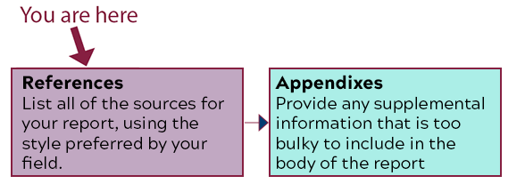

How to analyze your audience and purpose so that you can choose how to present information clearly and effectively. [CLO 1]
How to find and evaluate original, ethical evidence that supports your position through primary and secondary research. [CLO 2 & 3]
How to write documents you may encounter in the workplace (specifically front matter for a report). [CLO 4]
How to use colors, layout, and formatting that make your documents understandable and easy to read. [CLO6]
How to take advantage of design principles, including contrast, repetition, alignment, and proximity, to communicate your ideas effectively. [CLO 7]
What I Want You to Do

The Sections of the Back Matter of the Recommendation Report
List all of the sources for your report, using the style preferred by your field. This section is sometimes called your bibliography or works cited page.
Why I Want You to Do It
The References section is where you credit the sources that contributed to your report. You need References to ensure that readers know which information is yours and which was gathered from outside sources. Without References, it will appear that you plagiarized the report. I am breaking the report out, section-by-section, to guide you through the process of writing the document and help make sure you include everything that is required for a complete report.
Where You Can Find Help
From Markel & Selber, Chapter 18:
The details on References, from p. 502–503:
“Many reports contain a list of references (sometimes called a bibliography or list of works cited) as part of the back matter. References and the accompanying textual citations throughout the report are called documentation. Documentation acknowledges your debt to your sources, establishes your credibility as a writer, and helps readers locate and review your sources.”
Example References section, on pp. 526 (part of the sample recommendation report in Figure 18.8).
Appendix B, “Documenting Your Sources,” pp. 632–675.
Cite This For Me creates several styles, including IEEE, for free.
Add bibliographic citations for the sources that you used as you wrote your report.
Use the style that is appropriate for your career field. For instance, electrical engineers use IEEE, and biologists often use CSE.
Add a citation for every source that you mention in your report, including every webpage, every journal article, and every book.
Arrange the citations in the order that your style requires. For instance, some styles list references alphabetically by the first author’s last name while others list references in the order they are mentioned in the text
Review your citations to check for the following:
Are all sources in the document listed?
Are the citations complete? For instance, are all page numbers included?
Are the citations in the correct order?
Is a line skipped between the citations?
If indentation is required, are all the citations indented?
Make any revisions that are needed after your check.
Move on to the next part of your report that you want to work on.
How to Assess & Track Your Work
You track and grade your own work in this course. Be sure to complete the following tasks: